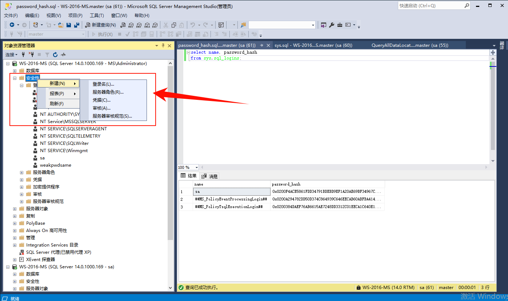
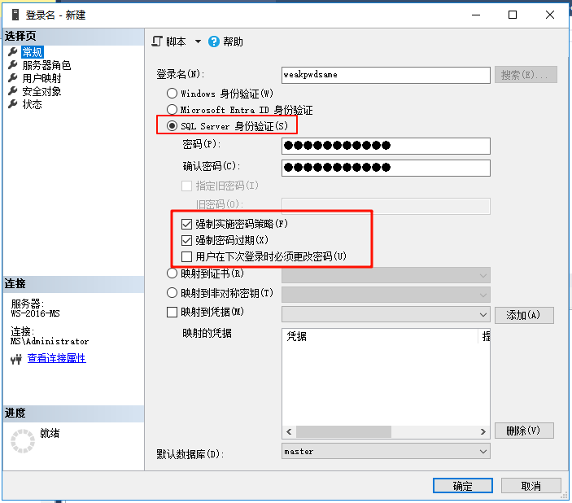
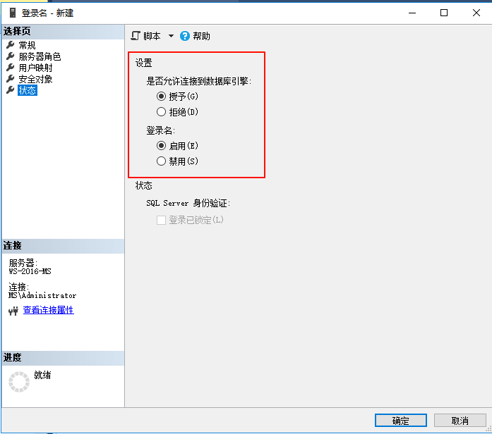
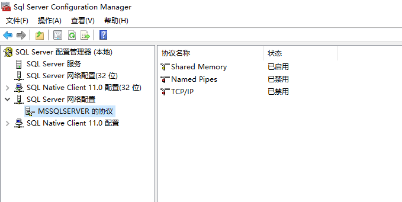

概述 SQLServer 弱密码检测
相关推荐：
- mssql_4n6 | Forensicist MDF 文件结构说明
SQLServer 用户
查询用户
sql
SELECT name AS LoginName, type_desc AS LoginType, create_date, modify_date
FROM sys.server_principals
WHERE type IN ('S', 'U', 'G', 'R')
ORDER BY LoginName;查询数据库物理文件位置
sql
USE master;
GO
SELECT
df.name AS LogicalName,
df.physical_name AS PhysicalLocation,
df.type_desc AS FileType
FROM
sys.database_files df;查询登录用户的信息
sql
SELECT *
FROM sys.sql_logins;
# 或者使用
select name AS loginName, password_hash
from sys.sql_logins
order by loginName;查询用户名和用户hash
sql
select name, password_hash
from sys.sql_logins;
# 查询结果如下所示：
sa 0x0200F4ACE5861FDD34791BDEBD9EF1A20AE69BF34967CB9BDFE5FB091CD85655E40A8F1EDEA6BE21225DC808BEC806D25DE47AA130AD8E1945A676A5A9EBAC3882B933425FBF
##MS_PolicyEventProcessingLogin## 0x0200A294782DD50D374C864939C646EECAB60ABFBA414FD65F04FE4EE7526BD97A969D9BBCA0E37A0DBE6D0CF04EB708170A1A57ADDD6C9E6A08708B687A7155D6EBA658185D
##MS_PolicyTsqlExecutionLogin## 0x0200384DAEF76AB6615AE7248DD3312C01EECA1C640E19F35ED9E6B76951FF3EA1F34FD1F23F79E70B0A4639BB09A4CDB7155CF6A3A141CCFBEEB3AF6985505751EEF3A9FDA7
weakpwdsame 0x0200C359A19A3E84F06A49FD0DD1AB0DED8024DD3512473CCFF49D7F4DB8166EE721CBD82F80141B1D80AD90889F7677AC2CF9B76529C81C9347B3659FD32B6CF6113830BA40Info
Hash 的密码说明
以
weakpwdsame为例，用户名为weakpwdsame，密码也是weakpwdsame。根据 SQL 查询的 hash 密码，哈希长度为0x0200，盐值为C359A19A。hash 规则是 。
创建用户
-
新建登录名

-
设置登录名、密码和策略

- 修改状态

hash 计算
参考文章：Calculate MD5 , SHA256, SHA512 in SQL Server
text
select HASHBYTES('SHA2_512', 'Admin@2022');开源 Sha512
TokenCore/TokenCore/crypto at ac53b38e6844ffb12deb4f049ad95ef70059273b · xiaotian777888/TokenCore](https://github.com/xiaotian777888/TokenCore/tree/ac53b38e6844ffb12deb4f049ad95ef70059273b/TokenCore/crypto)
使用 Demo
cpp
void SHA256_(const uint8_t* input, size_t length,
uint8_t digest[SHA256_DIGEST_LENGTH])
{
SHA256CTX context;
SHA256Init(&context);
SHA256Update(&context, input, length);
SHA256Final(&context, digest);
}使用 C++ 连接 SQLServer
连接字符串
连字符串：
- 连接字符串语法 - ADO.NET Provider for SQL Server | Microsoft Learn
- ConnectionStrings.com - Forgot that connection string? Get it here!
相关 DLL 和驱动
使用 ODBC 连接 SQLServer 时使用的 DLL 为 odbc32.dll
cpp
#define SQLSRV_ODBC_DLL "odbc32.dll"另外还有相关 API 接口调用的 DLL
cpp
if(sql2012)
{
driver = "Driver={SQL Server Native Client 11.0};";
dll = "sqlncli11.dll";
}
else if(sql2008)
{
driver = "Driver={SQL Server Native Client 10.0};";
dll = "sqlncli10.dll";
}
else if(sql2005)
{
driver = "Driver={SQL Native Client};";
dll = "sqlncli.dll";
}
else if(sql2000)
{
driver = "Driver={SQL Server};";
dll = "sqlsrv32.dll";
}判断使用哪个驱动和 DLL 接口的 API 参考项目：sqlines
cpp
// Define which SQL Server Native Client driver to use
void DefineDriver(std::string &driver, std::string &dll)
{
#if defined(WIN32) || defined(_WIN64)
HKEY hKey;
// Keys: SQL Server, SQL Server Native Client 10.0, SQL Server Native Client 11.0
int rc = RegOpenKeyEx(HKEY_LOCAL_MACHINE, "Software\\ODBC\\ODBCINST.INI", 0, KEY_READ | KEY_ENUMERATE_SUB_KEYS, &hKey);
if(rc != ERROR_SUCCESS)
return;
char key[1024];
DWORD i = 0;
bool sql2000 = false;
bool sql2005 = false;
bool sql2008 = false;
bool sql2012 = false;
bool more = true;
// Enumerate through all keys
while(more)
{
// Size modified with each call to RegEnumKeyEx
int size = 1024;
// Get next key
rc = RegEnumKeyEx(hKey, i, key, (LPDWORD)&size, NULL, NULL, NULL, NULL);
if(rc != ERROR_SUCCESS)
{
more = false;
break;
}
// SQL Server 2000 driver
if(strcmp(key, "SQL Server") == 0)
sql2000 = true;
else
// SQL Server 2005 Native client
if(strcmp(key, "SQL Native Client") == 0)
sql2005 = true;
else
// SQL Server 2008 Native client
if(strcmp(key, "SQL Server Native Client 10.0") == 0)
sql2008 = true;
else
// SQL Server 2012, 2014 and 2016 Native client
if(strcmp(key, "SQL Server Native Client 11.0") == 0)
sql2012 = true;
i++;
}
RegCloseKey(hKey);
// Return the highest available version (this driver is also used for 2014 and 2016)
if(sql2012)
{
driver = "Driver={SQL Server Native Client 11.0};";
dll = "sqlncli11.dll";
}
else
if(sql2008)
{
driver = "Driver={SQL Server Native Client 10.0};";
dll = "sqlncli10.dll";
}
else
if(sql2005)
{
driver = "Driver={SQL Native Client};";
dll = "sqlncli.dll";
}
else
if(sql2000)
{
driver = "Driver={SQL Server};";
dll = "sqlsrv32.dll";
}
#endif
}网络协议

cpp
switch (Protocol)
{
case NetworkProtocol.Pipes:
connectionBuilder.Append("Network=dbnmpntw");
break;
case NetworkProtocol.Shared:
connectionBuilder.Append("Network=dbmslpcn");
break;
case NetworkProtocol.Tcp:
connectionBuilder.Append("Network=dbmssocn");
break;
default:
break;
}一个基础的 Demo 用于连接 SQLServer
cpp
#include <windows.h>
#include <sql.h>
#include <sqlext.h>
#include <iostream>
int main() {
SQLHENV hEnv = NULL;
SQLHDBC hDbc = NULL;
SQLRETURN retcode;
// Allocate environment handle
SQLAllocHandle(SQL_HANDLE_ENV, SQL_NULL_HANDLE, &hEnv);
SQLSetEnvAttr(hEnv, SQL_ATTR_ODBC_VERSION, (SQLPOINTER)SQL_OV_ODBC3, 0);
// Allocate connection handle
SQLAllocHandle(SQL_HANDLE_DBC, hEnv, &hDbc);
// Set up connection string (as a wide string literal)
// Note: You might need to adjust the connection string based on your setup
WCHAR connStr[] = L"DRIVER={SQL Server Native Client 10.0};"
L"SERVER=myServerAddress;"
L"INTEGRATED SECURITY=True;"
L"DATABASE=myDatabase;";
// Connect to SQL Server
retcode = SQLDriverConnect(hDbc, NULL, connStr, SQL_NTS,
NULL, 0, NULL, SQL_DRIVER_NOPROMPT);
if (retcode == SQL_SUCCESS || retcode == SQL_SUCCESS_WITH_INFO) {
std::cout << "Connection successful!" << std::endl;
// Perform database operations here...
} else {
std::cerr << "Connection failed." << std::endl;
// Handle connection error...
}
// Disconnect and free up allocated handles
SQLDisconnect(hDbc);
SQLFreeHandle(SQL_HANDLE_DBC, hDbc);
SQLFreeHandle(SQL_HANDLE_ENV, hEnv);
return 0;
}